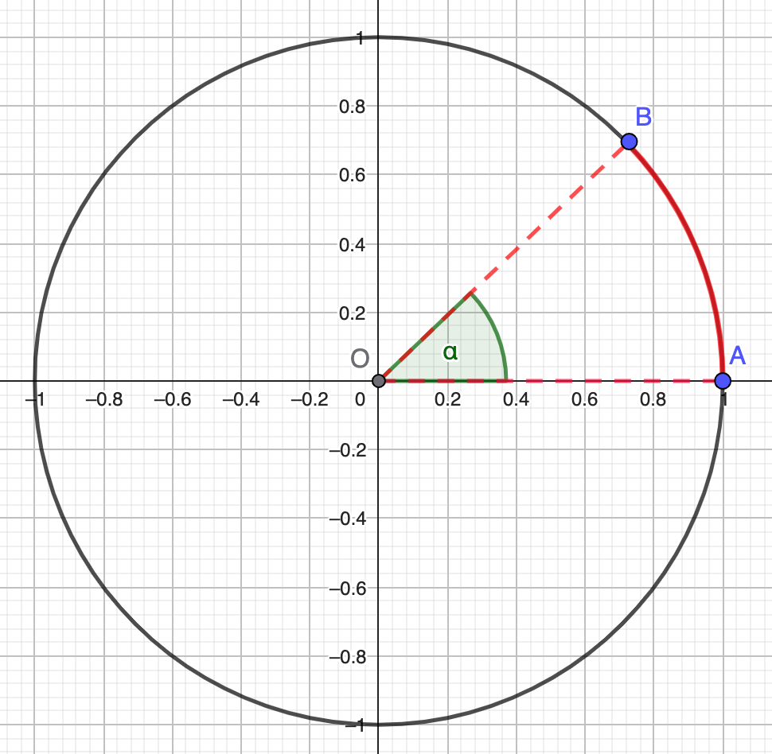
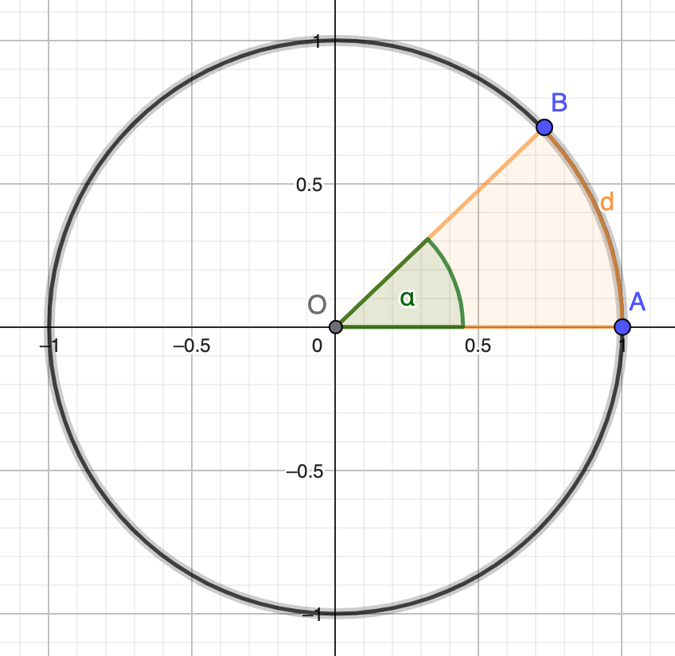
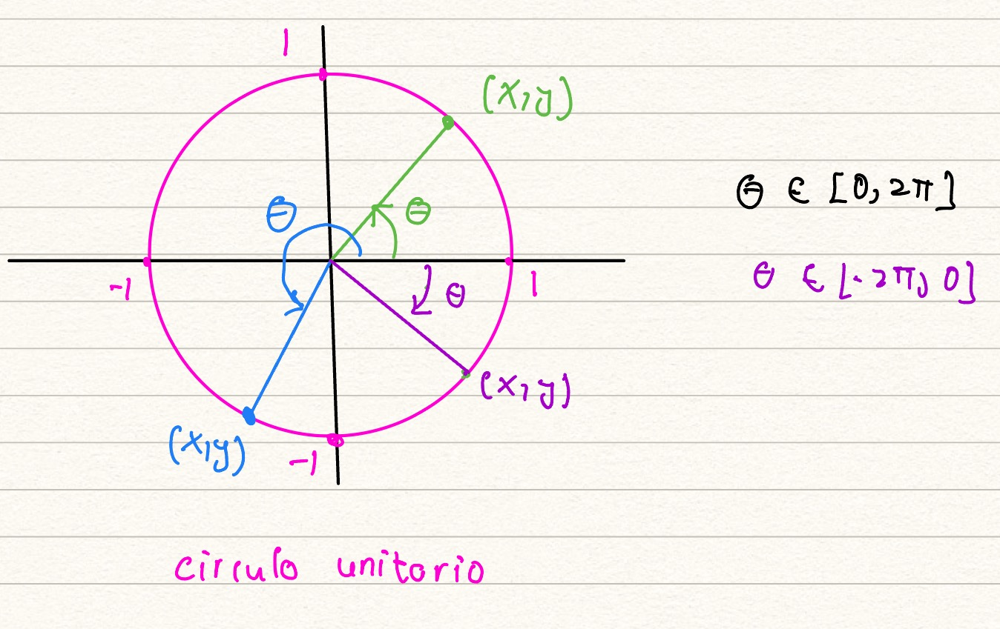
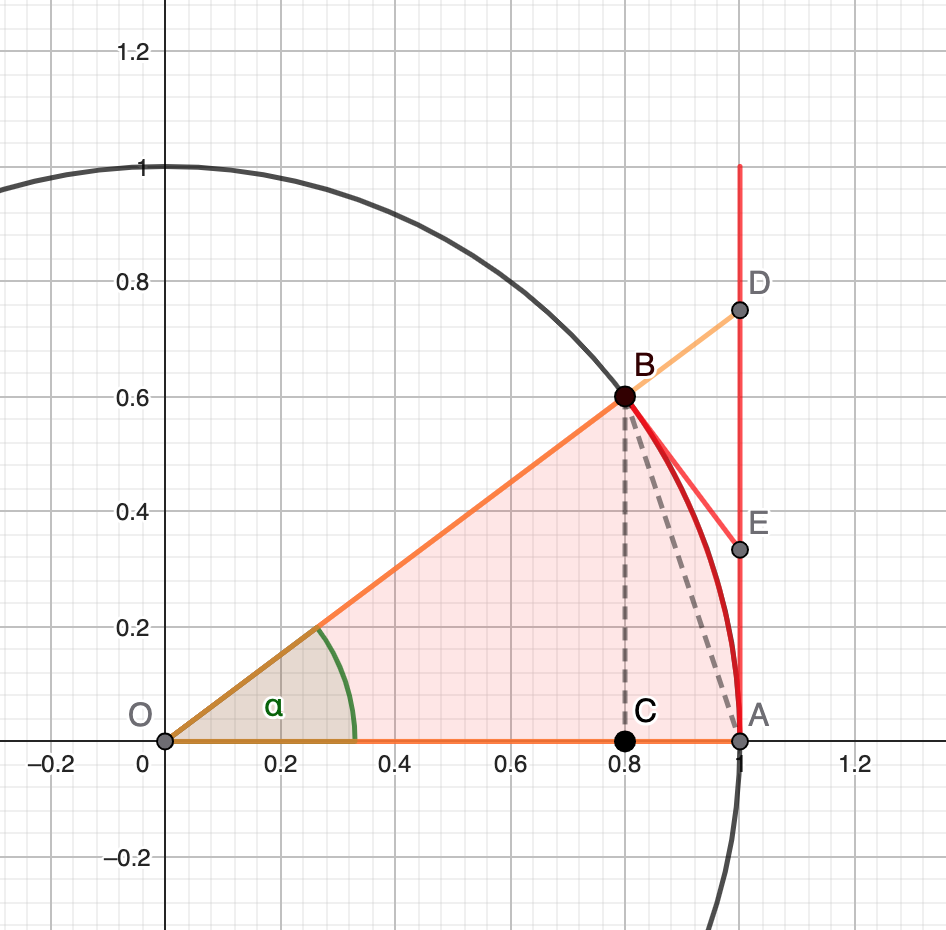

La línea tangente a la gráfica \(y=f(x)\), en el punto \((a,f(a))\), es
la recta con ecuación:
\[
y-f(a)=f'(a)(x-a)
\]
siempre y cuando \(f'(a)\) exista.
Ejercicio
Encuentra las rectas tangentes a las gráficas de las funciones, en los
puntos dados:
\(f(x)=\sqrt{x}\), en \((1,1)\).
\(f(x)=x(x-1)\) en \((0,0)\) y \((1,0)\).
Ejercicio
Considera la función \(f(x)=\frac{1}{x}\), \(x>0\).
Demuestra que el area del triángulo formado
por la intersección de la recta tangente a la gráfica de \(f\) en el
punto \((a,\frac{1}{a})\) y los ejes ordenados, es independiente del punto
\(a\) que se tome.
Una rayo de luz llega perpendicularmente al espejo parabólico
\(y=x^2\) en el punto \(P=(a,a^2)\).
Encuentra la recta tangente a la parábola en \(P\).
Encuentra \(Q\), la intersección de la recta tangente con el eje \(y\).
Denotemos \(F=(0,\frac{1}{4})\) al fóco de la parábola. Prueba que la
distancia de \(F\) a \(Q\) y la distancia
de \(F\) a \(P\) es la misma.
Prueba que los ánguos \(\sphericalangle PQF= \sphericalangle QPF\).
¿ Qué ley de la física dice que los rayos de luz se
concentran en el foco?
Ejercicio
Considera la recta \(L\), con ecuación \(y=m(x-a)+b\), con \(m\ne 0\).
Demuestra que la recta con ecuación \(y=\frac{-1}{m}(x-a)+b\) es
perpendicular a \(L\).
Considera la parábola \(f(x)=x^2\). Demuestra que toda recta tangente
a la gráfica de la parábola toca a ésta en un sólo punto.
Sugerencia: usa el Ejercicio 7.4 .
Ejercicio
Fija \(c\in \mathbb{R}\), \(c\ne 0\) y considera la parábola \(y=cx^2\).
Demuestra que de todas las rectas de la forma \(y=mx\), la única que es
tangente a la parábola es cuando \(m=0\).
Ejercicio
Considera la función \(f(x)=\sqrt{x}\), \(x>0\). Demuestra que toda recta
tangente a la gráfica de \(f\) toca a ésta en un sólo punto.
Sugerencia: primero prueba que la pendiente de la recta que une los puntos
\((a,\sqrt{a}) \) y \((b,\sqrt{b})\) es \(\frac{1}{\sqrt{a}+\sqrt{b}}\).
Ejercicio
Determina \(c\), de tal forma que la recta que une \((0,4)\) con \((10,-6)\),
es tangente a \(y=\frac{c}{x+1}\).
Ejercicio
Construye una función, no constante, cuyas pendientes de las rectas
tangentes en \(x=1\) y \(x=3\) sean las mismas.
Ejercicio
La forma de un espejo está modelada por la curva \(y=\frac{4}{x}\).
Un rayo de luz, perpendicular al eje \(x\), cae al espejo en el punto
\((a,4/a)\) y es reflejajo horizontalmente. Cálcula \(a\).
Ejercicio
Si una función diferenciable \(f\) satisface \(|f(c)-f(d)| \leq M|c-d|\)
(es decir, Lipschitz), para cualesquiera \(c\) y \(d\) en el dominio de \(f\),
demuestra que \(|f'(x)| \leq M\) para todo \(x\).
Definición
Radianes
Los ángulos se mediran en radianes, pues tiene varias ventajas. Antes de repasar
estas ventajas recordamos que para un círculo de radio \(r\) la longitud de se circunferencia
es \(2\pi r\) y su área es \(2\pi r^2\). Por lo tanto, en el círculo unitario éstas dos cantidades
coinciden.
Ahora nos enfocamos en el círculo unitario para medir los ángulo. Cuando medimos un ángulo \(\theta\)
en radianes lo más importante es que
la longitud del segmento de circunferencia que subtiende el ángulo es precisamente \(\theta\). Por ejemplo,
\(180^o\) corresponde a \(\pi\) pues el arco que subtiende \(180^o\) (la mitad de la circunferencia)
tiene longitu \(\pi\) (la mitad de la longitud de la círcunferencia de radio 1).
Con esta convención los posibles valores que puede tomar un ángulo son \([0,2\pi]\) y los
podemos representar en el círculo unitario usando la convención de dibujarlos iniciando en el eje positivo
de las \(x\) y siguiendo una orientación en el sentido contrario de las manecillas del reloj.
Para ilustrar
en el dibujo de abajo se tiene el círculo unitario y un ángulo \(\alpha\). Al estar
\(\alpha\) medido en radianes la longitud del arco de \(A\) a \(B\) es
precisamente \(\alpha\).

Si por el contrario dibujamos los ángulo iniciando en el eje de las \(x\) pero en el sentido
de las manecillas del reloj hacemos la convención de que los valores del ángulo son negativos
teniendo los posibles valores en el intervalo \([-2\pi, 0]\).
Otra ventaja de los radianes es que están relacionados con el área. De nuevo tomando el círculo
unitario para medir los ángulos, si dibujamos un ángulo \(\alpha \in [0,2\pi]\) el área del
segmento circular que subtiende (la "rebanda de pizza"), en la imagen de abajo denotado por \(d\),
es precisamente \(\frac{\alpha}{2}\).

Justificación.
Sea \(\alpha \in [0,2\pi]\) y sea \(d\) el segmento circular que subtiende el ángulo \(\alpha\) en el círculo unitario.
Queremos probar que \(\textrm{Area}(d)=\frac{\alpha}{2}\).
Caso 1: \(\alpha\) es de la forma \(\alpha= \frac{1}{n}2\pi\). En este caso si colocamos \(n\)-copias del segmento \(d\),
uno al lado del otro, obtenemos el círculo unitario por lo que \(n\textrm{Area}(d)=\pi\) y despejando
tenemos \(\textrm{Area}(d)=\frac{1}{n}\pi=\frac{\alpha}{2}\).
Caso 2: \(\alpha= \frac{m}{n}2\pi\), con \(n,m\in \mathbb{N}\), \(m < n\). En este caso tenemos que el mismo
segmento \(d\) puede ser dividido en \(m\) subsegmentos cada uno con un ángulo de \(\frac{1}{n}2\pi\). Si \(d_1, \dots, d_m\)
denotan estos subsegmentos tenemos que
\[
\textrm{Area}(d)=\sum_{i=1}^m \textrm{Area}(d_i)
\]
pero por el caso 1, \(\textrm{Area}(d_i)=\frac{1}{n}\pi\) por lo que
\[
\textrm{Area}(d)=\sum_{i=1}^m \frac{1}{n}\pi= \frac{m}{n}\pi= \frac{\alpha}{2}.
\]
Funciones trigonométricas
Vamos a utilizar el círculo unitario como auxiliar en la definición de las
funciones trigonométricas. Para calcular las funciones trigonométricas
básicas de un ángulo \(\theta \in [0,2\pi]\) dibujamos un ángulo \(\theta\),
iniciando en el eje positivo de las \(x\) en el sentido contrario a las manecillas del reloj. Esto
genera un radio de la círcunferencia cuyas coordenadas las denotaremos por \((x,y)\).
Si \(\theta \in [-2\pi, 0]\) hacemos algo similar pero
dibujamos el radio en el sentido de las manecillas del reloj.

Utilizando la definición básica de
\begin{eqnarray*}
\sen(\theta)&=&\frac{\textrm{cateto opuesto}}{\textrm{hipotenusa}}\\
\cos(\theta)&=&\frac{\textrm{cateto adyacente}}{\textrm{hipotenusa}}\\
\tan(\theta)&=&\frac{\textrm{cateto opuesto}}{\textrm{cateto adyacente}}
\end{eqnarray*}
y con la notación anterior tenemos
\begin{eqnarray*}
\sen(\theta)&=&y\\
\cos(\theta)&=&x\\
\tan(\theta)&=&\frac{y}{x}
\end{eqnarray*}
Notas
Con estas definiciones podemos probar que seno es una función impar y que coseno es una función par.
Usando la definición geométrica de las funciones seno y coseno, sin dar la demostración rigurosa,
tenemos que
\[
\lim_{\theta \to 0} \cos(\theta)=1, \quad \lim_{\theta \to 0}\sen(\theta)=0.
\]
Ejercicio
Sea \(\alpha \in (0,\pi/2)\) y considera el siguiente dibujo,

en donde \(A\) y \(B\) son los puntos en el círculo unitario del segmento de arco que subtiende \(\alpha\),
la recta \(BE\) es tangente a la circunferencia en \(B\) y la recta \(AD\) es tangente a la circunferencia en
\(A\).
Prueba que la longitud del segmento de circunferencia que une \(A\) con \(B\) es menor a la distancia
entre los puntos \(A\) y \(D\).
Por \(|AD|\) denotamos la distancia entre \(A\) y \(B\). Como estamos midiento \(\alpha\) en radianes,
la longitud del arco que une \(A\) con \(B\) es precisamente \(\alpha\) y entonces
debemos de probar que
\[
\alpha < |AD|
\]
Para lo anterior vamos a ver a áreas. Sea \(d\) el segmento circular determinado por \(O,A,B\)
y sea \(P\) el polígono formado por los puntos \(O,A,E,B\). Ya que las rectas \(BE\) y \(AD\)
son tangentes a la circunferencia
y éstas rectas se intersectan en \(E\) tenemos que \(d\subset P\) y por lo tanto
\[
\textrm{Area}(d) < \textrm{Area}(P),
\]
pero \(\textrm{Area}(d)=\frac{\alpha}{2}\) por lo que tenemos
\[
\frac{\alpha}{2} < \textrm{Area}(P) \Rightarrow \alpha < 2 \textrm{Area}(P).
\]
asi pues habremos terminado si probamos
\[
2\textrm{Area}(P) < |AD|
\]
Analizando el área de \(P\) tenemos
\[
\textrm{Area}(P)=\textrm{Area}(\Delta_1)+\textrm{Area}(\Delta_2)
\]
done \(\Delta_1\) es el triángulo con vértices \(O,A,E\) y \(\Delta_2\) es el triángulo
con vértices \(O,E,B\). Ya que \(|OA|=|OB|=1\) tenemos
\[
\textrm{Area}(\Delta_1)+\textrm{Area}(\Delta_2)=\frac{|AE|}{2}+\frac{|BE|}{2}
\]
por lo que
\[
2\textrm{Area}(P)=|AE|+|BE|.
\]
Finalmente, utilizando el triángulo rectángulo con vértices \(B,E,D\) tenemos \(|BE|< |DE|\) por lo que
concluimos
\[
2\textrm{Area}(P)=|AE|+|BE|< |AE|+|DE|=|AD|.
\]
Demuestra
\[
\frac{d\sen(x)}{dx}=\cos(x), \quad \frac{d \cos (x)}{dx}=-\sen(x)
\]
Usando la fórmula para la derivada de un cociente, demuestra
\[
\frac{d \tan (x)}{dx}=\sec^2(x)
\]
para \(x\) con \(\cos(x)\ne 0\).
Ejercicio
Encuentra las rectas tangentes y normal en los puntos dados.
\(y=\sen(x)\) en \(\frac{\pi}{2}\).
\(y=x^2\) en \((a,a^2)\), donde \(a\in \mathbb{R}\) es fijo y arbitrario.
\(y=x^2+x+1\) en \((1,3)\).
Ejercicio
Encuentra la recta tangente a \(\cos\) en el punto \((0,1)\). Este ejercicio
muestra que la recta tangente puede tocar a la graáfica en una infinidad
de puntos.
Encuentra la recta tangente en \(0\). Este ejercicio muestra que la recta
tangente en un \(a\)
puede tocar a la gráfica en una infindad de puntos en cualquier vecindad
el punto \(a\).